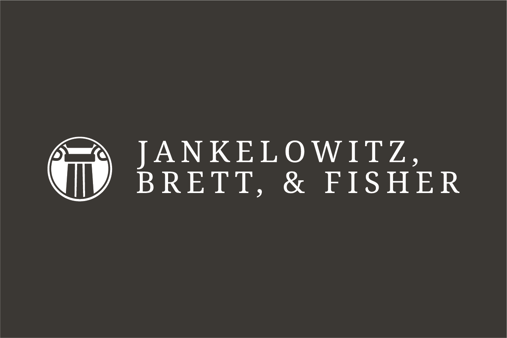

Professional services affiliate
Jankelowitz, Brett, & Fisher
Legal-adjacent advisory with a traditional look and very serious punctuation.
Core group
An advisory and media platform coordinating strategic counsel, professional services, publishing, multimedia advisory, and studio operations.

Platform mandate
Springbok Associates houses a portfolio of advisory and media-related brands with distinct identities and selectively visible logos.

Legal-adjacent advisory with a traditional look and very serious punctuation.
Publishing, editorial development, and house perspectives that sound older than they are.
Media strategy and presentation-layer advisory for projects requiring more confidence than clarity.
Content development, production strategy, and cinematic ambition within budgetary constraints.
Selected initiative
A cross-platform effort to convert opinions, bits, concepts, and half-formed ideas into structured creative assets with executive summaries.